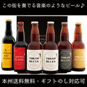

お中元 御中元 ギフト クラフトビール 地ビール ビール ギフト 本州送料無料 クラフトビール 飲み比べ セット この街を奏でる 音楽のようなビール 6本 beer
内容量・入数 330ml 4種 計6本 ＴＯＫＹＯ ＢＬＵＥＳ（瓶） 330ml×2本 ビールのタイプ：セッションエール、原材料：麦芽・ホップ、アルコール度数：4.5% ＴＯＫＹＯ ＢＬＵＥＳ ゴールデンエール（瓶） 330ml×1本 ビールのタイプ：ゴールデンエール、原材料：麦芽・ホップ、アルコール度数：5.5% ＴＯＫＹＯ ＢＬＵＥＳ セッションエール（瓶） 330ml×1本 ビールのタイプ：ヴァイツェン、原材料：麦芽・ホップ、アルコール度数：5.5% 黄桜 ＫＹＯＴＯ ＣＬＡＳＳＩＣ レッドエール（瓶） 330ml×1本 ビールのタイプ：レッドエール、原材料：麦芽・ホップ、アルコール度数：4.5% ＯＳＡＫＡ ＢＡＹ ＢＬＵＥＳ ベルジャンホワイト（瓶） 330ml×1本 ビールのタイプ：ベルジャン・ホワイト、原材料：麦芽、小麦、オレンジピール、コリアンダー、ホップ、酵母、アルコール度数：5%